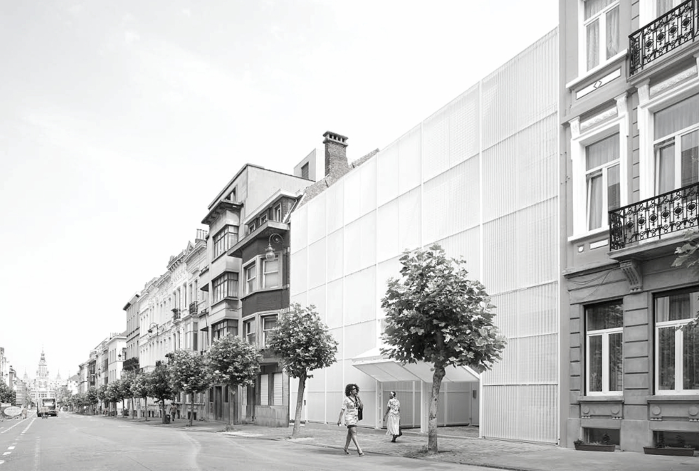
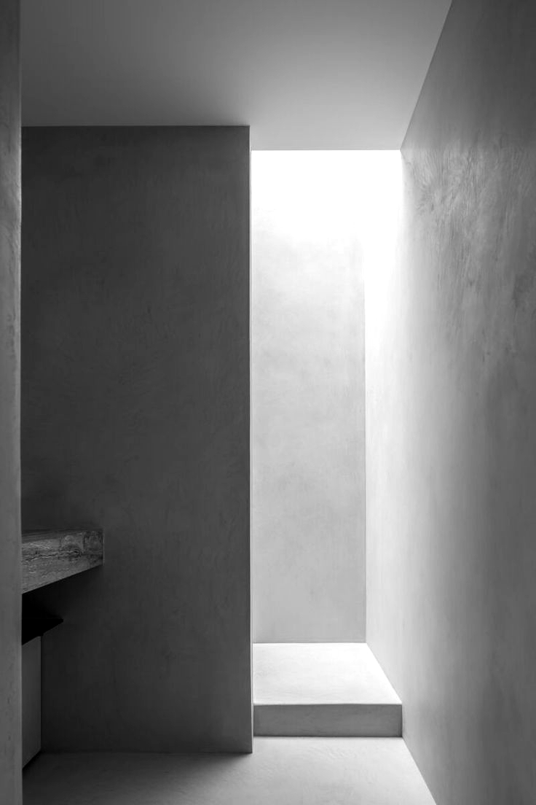

Bâtir, c'est travailler des contradictions.
Intentions
Un bâtiment n'est pas un objet mais un processus : la forme momentanément figée d'un rapport social en mouvement.
La contradiction comme méthode
Un projet n'est pas un compromis, c'est une contradiction travaillée : valeur d'usage contre valeur d'échange, programme contre site, commande contre besoin. Le bâtiment achevé n'abolit pas ces tensions — il les fixe pour un temps, et en libère de nouvelles.
Base et superstructure
Un plan n'est jamais une forme libre : prix du foncier, normes, organisation du travail le déterminent. Mais Engels, écrivant à Bloch en 1890, corrigeait déjà le mécanisme — l'économique n'est déterminant qu'en dernière instance, et la forme réagit en retour sur ce qui l'a produite.
La négation déterminée
Réhabiliter, c'est refuser les deux facilités : démolir, qui nie sans conserver ; restaurer à l'identique, qui conserve sans nier. Reste le dépassement — garder la structure porteuse et renverser l'usage. Un mur du XIXe qui porte un programme du XXIe est une négation réussie.
Le perçu, le conçu, le vécu
Lefebvre montre en 1974 que l'espace est produit, jamais donné, et qu'il se joue sur trois plans à la fois : les pratiques, les représentations des techniciens, l'expérience des habitants. Le dessin ne relève que du deuxième. Il ne vaut que confronté aux deux autres.
Projets — 17 vues
Dix-sept états provisoires.
Logements, équipements, réhabilitations et mobilier. Chaque image fixe un moment du processus, pas un aboutissement : le seuil, le joint, l'escalier sont les endroits où la contradiction devient visible. Cliquez une image pour l'ouvrir en grand ; les flèches du clavier font défiler la série.

Une façade est une médiation : elle sépare le privé du public et, du même geste, les met en rapport. C'est là, sur cette mince épaisseur, que la contradiction devient lisible depuis la rue.
L'atelier
Une praxis : la théorie s'y vérifie sur le chantier, ou elle ne vaut rien.
DIA architectures est un atelier d'architecture qui travaille entre Bruxelles, Marseille et Udine, avec le matérialisme dialectique pour méthode de projet.
Concrètement : nous n'abordons pas un site par ses qualités mais par ses tensions. Qui possède le sol, qui l'occupe, quel travail l'a bâti, quel conflit d'usage s'y joue. La forme vient après, comme résolution provisoire — et nous la tenons pour révisable.
Le travail est lent parce qu'il est cumulatif. Des ajustements minuscules et répétés — dix centimètres de hauteur, l'épaisseur d'un seuil, la position d'une baie — finissent par produire un changement de nature : la pièce cesse d'être un volume et devient habitable. Ce saut ne se dessine pas, il s'obtient.
Tafuri prévenait en 1973 qu'il n'existe pas d'architecture de classe, seulement une critique de classe de l'architecture. Nous en tirons une modestie de méthode : aucun bâtiment ne rachète les rapports qui l'ont commandé. Reste à ne pas les aggraver, et à rendre visible ce qu'ils font à l'espace.

Contact
Parlons du lieu, et de qui l'habitera.
Bruxelles
Atelier principal
Belgique
Marseille
Atelier
France
Udine
Atelier
Italie
Collaborations
Concours, missions complètes et études de faisabilité. Priorité aux maîtrises d'ouvrage publiques, aux coopératives d'habitants et aux community land trusts — là où le sol échappe au marché.